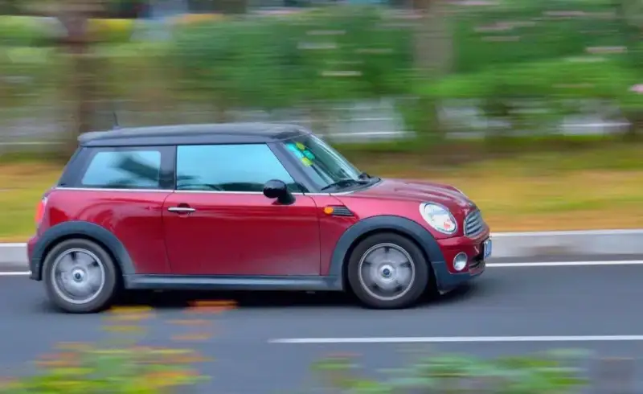
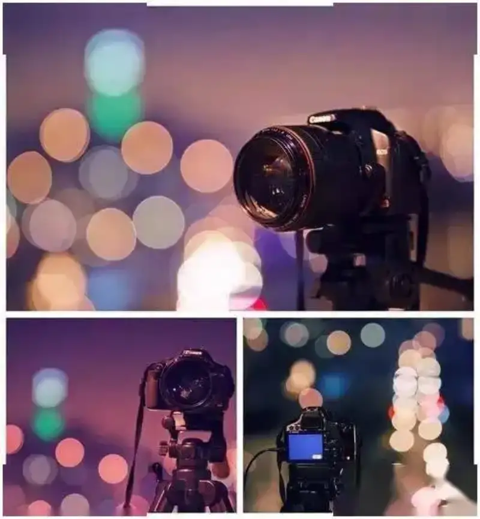
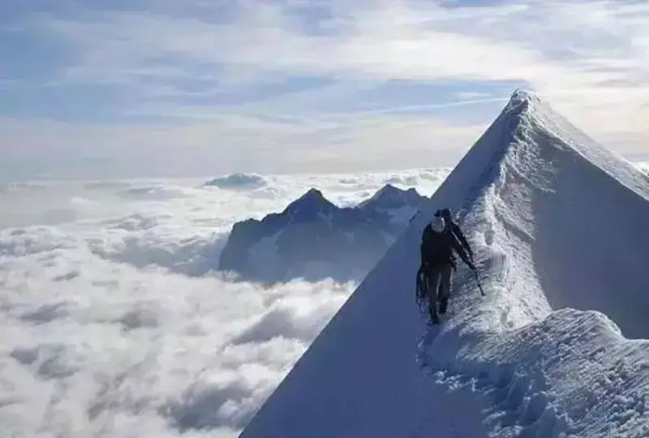
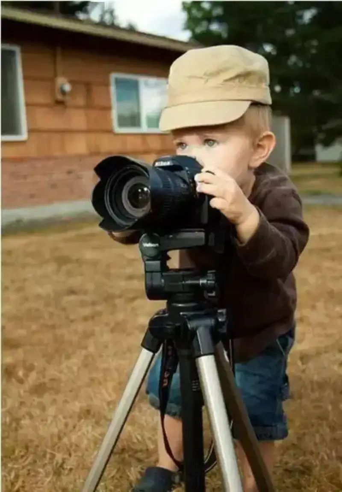
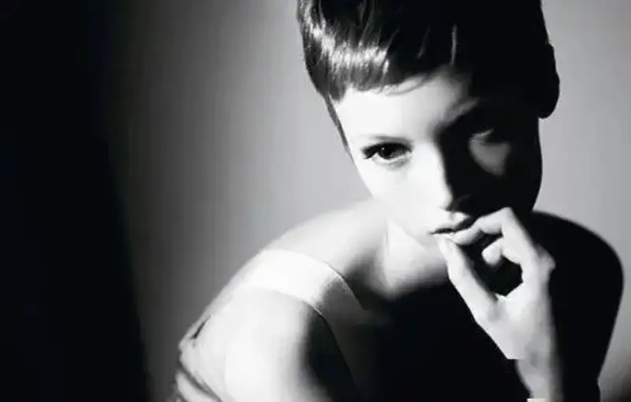
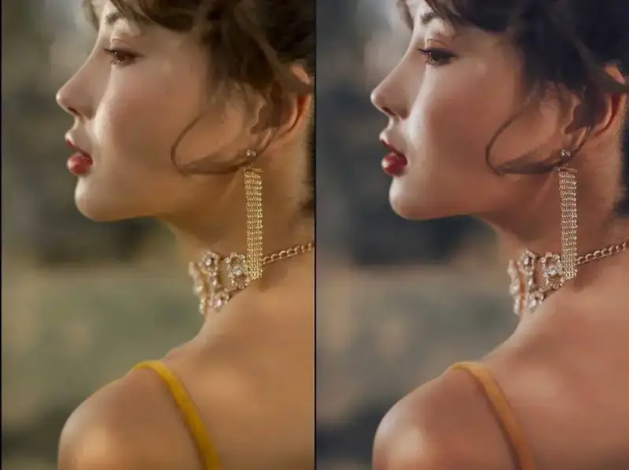
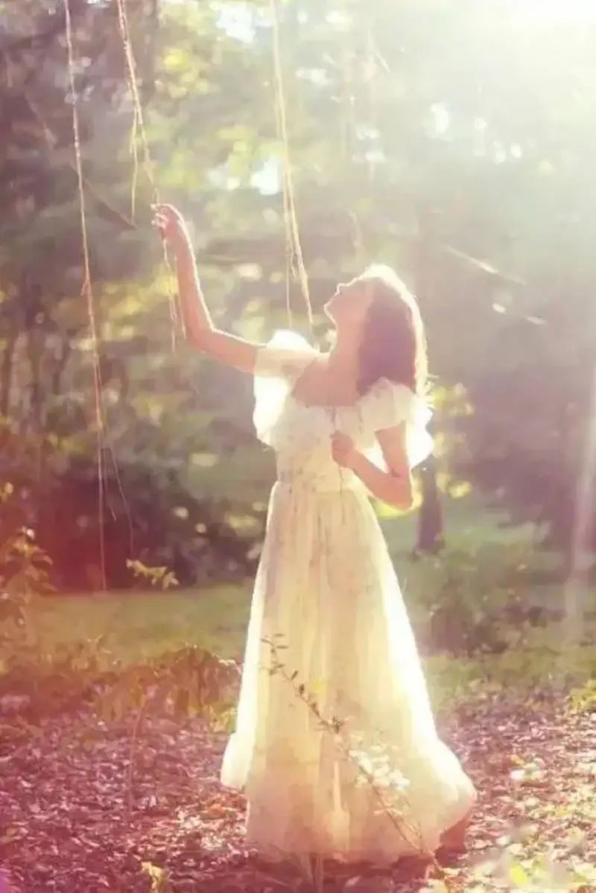
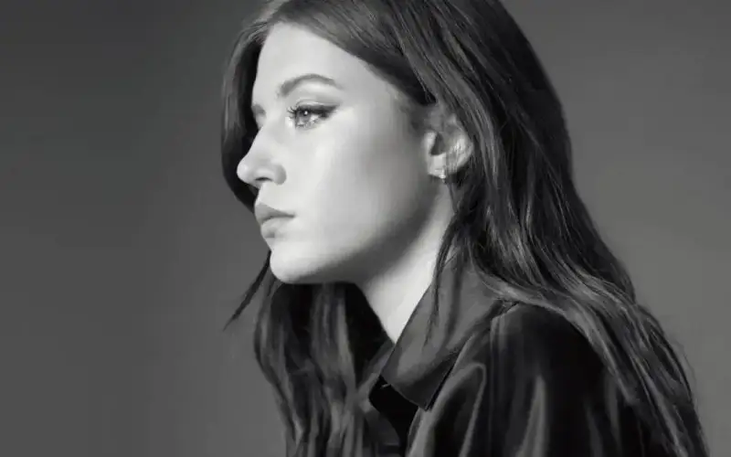
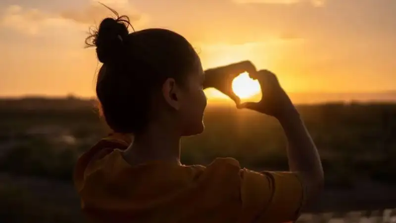
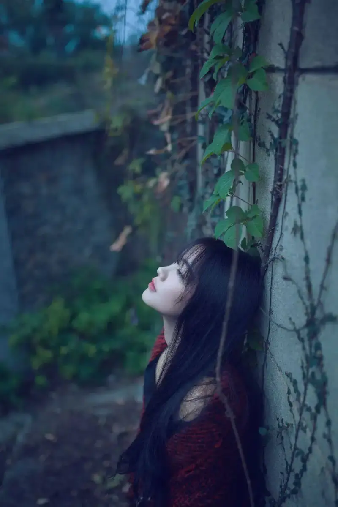

1. How to pan the camera
Panning is a method for shooting a moving subject. It keeps the focus on the static part. You move the lens to follow the subject and show its sense of speed. To use this method, set the camera to shutter priority mode. Then use a slower shutter speed, usually 1/30 s or 1/60 s. Keep the camera close to the subject and move with it. This makes the subject sharp and the background blurred. Burst mode gives you a better chance to catch sharper photos.

2. How to place a tripod on a slope
If you use a tripod on a slope, one method keeps the camera safe from sudden danger. If you shoot on a rock or a small hill, point one tripod leg toward yourself. Then the three legs support the camera steadily and prevent a fall.

3. How to avoid underexposure
Photographers often underexpose their photos. When they turn on the flash, they worry the light will be too bright and they will lose the natural light of the scene. In this case, the best method is to use the exposure compensation of the camera. Raise the exposure compensation by one or two stops. The dark areas will usually improve.
4. How to focus first and then compose
First aim the focus point at the center of the face you want to shoot. Press the shutter button halfway to focus and measure the light. Keep holding the button. Then move the camera sideways to recompose the frame.

5. What aperture priority is used for
DSLR cameras often come with a fast lens. In automatic mode, the camera also tends to use a wide aperture to shorten the shutter time. This reduces the bad results caused by camera shake. But a lens usually gives its best image when you stop it down about two stops from its widest aperture. So if you want a high-quality image, use aperture priority auto exposure. Stop the aperture down a little from its maximum. A wide aperture also gives a shallow depth of field. This helps the subject stand out.
6. How to avoid lens flare
If you shoot the sun directly, it creates lens flare inside the lens. This upsets the contrast of the image. It also makes incoming light reflect off the lens surface onto the CCD and forms bright streaks. A good lens hood helps limit flare. Using the smallest aperture also reduces these bright spots.
7. How to make lights look like stars
To make a light look like a star, use a small aperture for the exposure. The smaller the aperture, the stronger the effect.
8. How to protect your camera
To protect your digital camera and battery, do not use the DSLR in very high or very low temperatures. Never leave the camera in direct sunlight for hours. When you shoot, do not point the lens straight at the sun, or it may damage the CCD.
If you must work in sunlight, cover the camera with a light-colored towel or reflective material. Try to avoid shooting in rain or snow. If you do shoot, protect the camera well. Do not shoot for a long time in low temperatures, to keep the camera from aging. In cold winter, the camera can gather condensation when it moves from outside to inside, just like your glasses.
The correct method is to put the camera in a sealed plastic bag. Take it out only when it matches the room temperature. When you store the camera after use, always remove the battery. Keep it in a dry place so it does not get damp.
9. How to improve image quality
A DSLR can save images as JPEG or as RAW. The RAW format is very useful for later editing. A RAW image is not auto-adjusted by the camera, so its quality is higher. You can then set saturation, contrast, and sharpness to adjust the details and improve the image.
10. What bulb mode is
Bulb mode is a setting that lets you use a long exposure. The exposure lasts from the moment you press the shutter until you release it. When you use bulb mode, use a tripod and a remote shutter release.
11. What exposure bracketing does
Exposure bracketing means you shoot three or more photos in a row at different exposures. It helps you find the best exposure.
12. What the highlight warning is
When you view the shooting information, the overexposed areas of the image blink. To keep more detail in the overexposed areas, set the exposure compensation to a negative value and then shoot again.
13. What a polarizing filter is
A polarizing filter is the most common and most useful filter. It deepens the tone of a blue sky. It also removes glare and reflected light.
14. How to show the size of a subject
It is hard to judge the real size of an object from a photo. A wide ocean may appear as only a horizontal line. A small object, even one you cannot see with the naked eye, may take up a large area of the frame. In that case you can use contrast to show size. A contrast of scale lets the viewer judge the real size of the object. It can also express an idea or feeling through exaggeration.
To show the real size of a subject, you need a reference object in the shot. Usually this is an object from daily life whose size people know. This makes the subject stand out. It also gives the viewer a strong sense of the subject's real size.
15. How to place the horizon
Place the horizon in a good position when you shoot. For a grassland or similar scene, put the horizon at one third of the frame. For a seascape, the horizon decides the meaning of the image. If the horizon sits in the lower third, it shows the distance of the sea. If it sits in the upper third, it shows the breadth of the sea.
16. What front light does
Front light lights a face evenly when you shoot a portrait, and it reduces blemishes. But front light is the flattest kind of light. It does not show the shape of the subject or a sense of depth, and it lacks life.
17. What side light does
Side light improves the image clearly. It creates light and shadow on the subject and shows its shape and surface texture. It matches what the human eye normally sees, so it is used widely in photography.
18. What back light does
Back light outlines the shape of the subject and separates it from the background. It forms a bright line along the edge of the subject. It sets the mood of the image and makes the frame richer and more lively.
19. How to prevent camera shake
When you shoot outside, it is best to carry a tripod. If you do not have one, lean your body against a wall or rest your hand on a rail to steady the camera.
20. The benefits of shooting from above
A high-angle shot means the camera is above the subject and points down. This angle is like looking out from a height. The near and far objects spread out in the frame from bottom to top. It shows the layers, number, and position of objects on the ground. It gives a feeling of breadth and depth.
21. The benefits of shooting from below
A low-angle shot means the camera is below the subject and points up. It emphasizes the tall, imposing feel of the subject. It can fully show objects that grow upward, such as trees. A low angle near the ground can also exaggerate actions like leaping or jumping. When you shoot a person from below, avoid this angle if the person has a round face.
22. What eye-level shooting does
Eye-level shooting means the camera and the subject are on the same horizontal line. The subject does not distort easily. This is especially true for scenes of people, and it feels equal and friendly. For natural scenes, the horizon is important. To stress symmetry, you can place the horizon in the middle. But in most cases, avoid letting the horizon split the frame evenly. If it does, the far and near views compress into one line, and the image looks flat and stiff.

23. What Rembrandt lighting is
Rembrandt lighting uses strong side light to cast a triangle of shadow on one side of the face. It divides the face in two while making the two sides look different. With even, overall lighting, the two sides of the face would look the same.

24. What software converts RAW files
You can process and convert the RAW files from a DSLR with software such as Photoshop.
25. How to focus on a small, distant object
When the subject is far away and you cannot reach it, focus on an object at the same distance as the subject. This method of forced focus is very useful.
26. What post-processing does
Learn to use image editing tools. A digital photo is not always perfect, but its strength is that you can edit it easily. If you use editing software such as Photoshop well, you can get a satisfying image. With editing software, you can brighten an underexposed image, correct colors, crop distracting background, and cover small defects, such as flaws on the face of a person.
27. How to save battery on a DSLR
When you shoot, try not to use the LCD screen for framing. Use the small optical viewfinder of the camera. Also, use playback as little as possible to review your photos. And do not turn the camera on and off often, because this drains the battery faster.

28. How to make photos sharper
Sharp focus is a basic requirement in photography. But for a beginner, sharp focus in every photo is hard to achieve. Many factors affect focus. If you do not master them well, good results are hard to get.
Here are a few good ways to keep focus sharp, for beginners.
1. Prevent shake. Shake makes the image in the photo move and blur. Even if you focus perfectly, it still hurts the sharpness of the final image.
There are two common causes of shake. The first is camera shake. The camera moves when you press the shutter because you do not hold it steady. The second is subject movement. The subject is moving at the moment the shutter opens, and the shutter speed is not short enough to freeze the action, so the image blurs. To prevent shake, you must treat the cause. You can take measures in three ways.
（1） Mount the camera on a tripod. If the shooting conditions do not allow a tripod, you can use a monopod instead.
（2） Shorten the shutter speed. (usually 1/250 s) to reduce the image blur caused by camera shake.
（3） Hold the camera correctly. When you do not use a tripod, your holding posture directly affects the stability of the camera. To stop the subject itself from blurring, there is only one method: shorten the shutter speed. When conditions allow, the shorter the shutter speed, the better.

2. Do not chase small apertures blindly. Beginners think a small aperture increases depth of field and must make the image sharp. So they stop the aperture down in every situation. Especially when they are unsure of focus, they trust a small aperture to help. But the result is often poor, because a small aperture lengthens the shutter time and lets camera shake hurt the image. So chasing small apertures is not a good plan. The correct approach is to use a fast shutter speed and a tripod.
3. Understand your lens. Many people think a smaller aperture always gives sharper results. This is not correct. A lens usually gives its best image about two to three stops down from its maximum aperture. For example, a lens with a maximum aperture of F2.8 is sharpest when it is stopped down to F5.6 to F8.
4. Pay attention to the background and the subject. The color contrast between the subject and the background affects how people see the image. With the focus fixed, a strong contrast makes the image look sharper. A weak color contrast makes it look less sharp. So if you want the subject to stand out sharply, choose a high-contrast background on purpose.

29. How to take good silhouette photos
1. Show the shape of the silhouette subject well, and join the shape to the background in a lively way. The shape is the language, and the background is the tone. This silent language sometimes speaks louder than words, and the viewer reads it in their own way. That is the charm of a silhouette. In a silhouette, the subject shows almost no color or detail, so the shape must be strong. Choose the angle and the pose carefully, based on the final look, and show the outer shape fully for beauty and life.
2. A silhouette makes full use of the light difference between the subject and the background. You can use back light at sunrise or sunset, because the light is soft and not harsh. This is a good time to shoot, but it lasts only about ten minutes. You can also use the light difference between indoor and outdoor, or the natural reflection of sky and water.
3. Underexpose rather than overexpose. Use spot metering on the bright part of the background. This makes the subject dark, and forms a strong silhouette.
4. If the subject is small in the frame, or the empty space is plain, use a silhouette creatively as a foreground. A black silhouette draws the viewer's eye toward the main subject, and it does not distract attention. You can even use a silhouette as a frame around the subject, in a square, round, or varied shape. This gives an ordinary scene a unique look and adds depth to the frame.
30. How to shoot in low light
1. Match the aperture and ISO. The basic rules of photography apply to low light too. A wider aperture needs a faster shutter speed. A lower ISO gives higher quality, and a longer exposure makes noise more likely. Use F22 for the greatest depth of field. Use the lowest ISO you can, usually ISO 100, to reduce noise.
2. Use a steady long exposure. The biggest feature of low-light photography is the long shooting time. You often need several seconds or even tens of seconds. So a sturdy tripod is essential. A remote shutter release also reduces the shake when you press the shutter.
3. Take three test shots. Mount the camera on a tripod, set ISO to 100 and aperture to F22, and take one photo at 5 seconds, one at 10 seconds, and one at 20 seconds. Use these three shots to judge the light of the scene. You often need bulb mode for such a long exposure. Decide the final exposure time from the results of the three test shots.
4. Always use RAW. In extreme cases such as long exposures, RAW gives much better quality than JPEG. Do not worry about storage space. A focus on quality brings the best photos.
5. Keep trying and stay fresh. Low-light photography has great creative potential. You do not have to follow fixed aperture, shutter, and ISO settings. Try new possibilities, and use different times and light to finish your work.
31. How to use filters in night photography
Some special filters also have a place in night photography. A night scene has a dark background and a bright subject, which is like high contrast. This lets some special filters do their work.
1. Star filters. Filters such as the Cokin 055, 056, 058, and 059 each create a different star effect. Other filters also work in night photography, such as the Cokin REF059 soft cross filter.
2. Soft filters. A soft filter suits scenes where the background and subject have some contrast, so it also helps in night photography. With a soft filter, the edge between light and dark, or a bright subject, spreads softly into the night sky. This looks unusual.
3. Speed filters. A filter such as the Cokin 217 gives an image that is sharp on one half and blurred, stretched, and rising on the other half, like a fast-moving object. If you place the speed part below the scene, the top stays sharp while the buildings in the lower half seem to rise into the night sky.
4. Rainbow filters. A rainbow filter suits scenes with a strong point light source. The effect is a very bright point in the center, with rainbow-like rays around it. Use it based on the actual scene. Do not overuse it, or the result will look wrong.
5. Multiple filters. A multiple filter refracts a simple object so that several copies of it appear in the frame, like looking through a kaleidoscope. Its downside is lower image quality, and the frame can look messy.
6. Polarizing filters. A polarizing filter removes polarized light. It raises color saturation and removes reflections from surfaces that are not buildings. In night photography, it darkens the ambient light, so you can use a slower shutter speed. A longer shutter speed gives the film enough time to record moving car lights, forming bands of light. It also removes bad reflections on glass.
7. Gradient filters. A gradient filter is colored on one half and clear on the other. Its main use is to adjust the contrast of a scene. In night photography, if the sky is too bright early on, a neutral gray gradient filter darkens the sky. When the sky grows dark, a colored gradient filter can change the color of the sky.
In short, use filters based on your needs in night photography. If you open your mind and use the right filter for the moment, it will improve your night photos.

32. How to use burst mode to catch great moments
Shooting burst photos is similar to shooting normal photos, but there is a difference. Burst mode is meant to catch a great moment, and if you miss it, you cannot take it again. A normal photo, such as a keepsake portrait, can be taken again until you are happy. So to use burst mode well, set up the basics first, and pay attention to the following points.
1. Shorten the shutter lag as much as possible. Most people press the shutter only when they see the shot they want. At that moment, the camera must autofocus, measure light, calculate exposure, and choose an exposure setting. This is the main cause of shutter lag. The correct way is to press the shutter halfway first, so the camera finishes autofocus and auto exposure. When the moment comes, press the shutter all the way down. This greatly shortens the lag.
2. Choose the right image size. After each burst, the digital camera processes the data and stores the photos as digital files on memory such as a memory stick, SM card, or SD card. This takes time. A film camera can take the next frame as soon as it advances the film, but a digital camera's delay depends a lot on the image size. A larger size means more data and a longer storage time. Too long a gap hurts the next shot and you lose great moments. So, unless you have a special reason, use a small size for burst mode. This cuts processing time and shortens the gap between shots.
3. Anticipate the moment. Stay focused and watch the subject closely. Press the shutter just before you feel the great moment is about to happen. Otherwise, the shutter lag of the digital camera will make you miss a rare chance.
4. In burst mode, the built-in flash is forced off, so you need good light. The author once shot in a poorly lit setting with automatic mode, and the photos were badly underexposed. If the light is dim, use manual settings such as shutter priority, aperture priority, or full manual. Adjust the shutter speed, aperture, and exposure compensation by hand. If conditions allow, use a tripod or a manual flash for better results.
5. After you press the shutter, the camera shoots continuously at more than two frames per second, depending on the model. During the burst, the LCD screen stays black and does not show the image as it would for a normal single shot. So do not move the lens, or the photos will not match what you expect.
33. How to shoot a person in a flower field under a blue sky
1. Use an off-camera flash. Put the camera into the flower field, and place the flash high, closer to the person.
2. Shoot in manual (M) mode. Meter the sky and reduce the exposure by 1 to 2 EV. Then use fill light plus the flash to brighten the person.
34. What is required to capture expressions
1. Be steady. As you talk with the subject to draw out their expression, stay natural, relaxed, and casual, and speak in a lively and humorous way. This brings out a natural expression. If you speak in the wrong way, you create tension and the subject cannot show a natural expression. So your own steadiness is the basis for capturing good expressions.
2. Be quick. Facial expressions change fast, and lively expressions disappear in an instant. You must be quick to see and act. When the subject's face is at its best, press the shutter at once and catch the moment that best shows their feeling. If you hesitate, you lose the chance and all your effort.
35. Methods for capturing expressions
1. Know the subject. Before you shoot, talk with them casually. Watch and study their expressions and facial features, so you can plan the ideal expression in time.
2. Guide the subject. During the shoot, talking with the subject helps you observe and think, and it removes their tension. It lets you pass shooting cues to them quickly, so they respond and cooperate, and show a natural, lively expression. For a subject who likes to perform, you can direct them like a director to bring out their best expression.
36. The pros and cons of shooting a person front-on
A front-on pose means the body faces the camera directly. It shows the width of the body and straight lines. It gives a feeling of dignity, or of stiffness.
37. The benefits of shooting a person in profile
A side angle between the body and the camera shows the lines of the body well. It especially shows curves in women. For a larger body, in a half-body side portrait, place the back near the edge of the frame. This hides the fullness of the body.
38. What an upright pose does
An upright, chest-out pose shows the energetic, spirited manner of the subject.
39. What a relaxed, curved-back pose does
A sideways, curved-back sitting pose, without a straight chest, looks relaxed and free. It suits scenes such as resting, talking, reading, or writing. It works for half-body poses of all ages.
40. What a tilted pose does
Whatever angle you tilt the body, it gives a lively, dynamic visual effect. For close-up photos, also use hand gestures to match.
41. How to show the expression of a person
In portrait photography, an expression is the dynamic reflection on the face of the subject's inner world under real conditions. It is a main way to show the subject's spirit, and it is one of the keys to joining form and spirit.
When you shoot, you choose which expression to draw out. Usually people prefer natural and joyful expressions, and avoid tension and embarrassment. Also match the expression to the shape of the face. For example, a subject with missing teeth, a wide mouth, or small eyes should not laugh broadly, to avoid unflattering features.
42. What a frontal portrait does
Shooting a person from the front shows the frontal features well. The parts of the face sit in equal, symmetric positions. It gives a feeling of quietness, dignity, and solemnity.

43. What a three-quarter portrait does
This angle is the most common in portrait photography. It shows both the frontal and side structure of the face, and the line where the two meet. This fully shows the image, outline, and depth of the subject. Because the parts of the face are not equal in the frame, the image looks lively and varied, and the whole frame has movement and a clear direction.
44. What a profile portrait does
This angle fully shows the side outline of the subject, so it is also common for silhouette portraits. A profile view has strong movement and direction, so it is also used for people moving fast forward.
45. What a back-view portrait does
In portrait photography, shooting from behind is rare and is used only in special cases. A back view shows the back features of the subject and guides the viewer's eye into depth. When you choose a back view, make sure the subject's back has interesting features.

46. Principles for choosing the main subject in portraits
When you handle the relation between a person and the scenery, make the person the main subject. When several people are in the frame, choose the main person as the subject, or make all of them equal subjects. Even with one person, decide which part is primary. For a full-body portrait, the head is usually the subject. For a half-body portrait or close-up, the face is usually the subject. For a tight close-up of the face, the eyes are usually the subject.
47. How to handle the background in portraits
1. Use the aperture. If the background is cluttered, open the aperture to narrow the depth of field. This blurs the background and makes the person stand out.
2. Use a telephoto lens. A telephoto lens narrows the background in the frame and increases the share of the person.
3. Use the shooting angle. Shoot from below, from above, or move your position. This simplifies and avoids cluttered, unnecessary background, and helps the person stand out.
4. Use distance. Adjust the distance between the person and the background to make the person stand out. For example, the farther the person is from the trees behind them, the more they stand out.
5. Use light. Different light creates different background effects. For example, a shadow as a background makes a bright person stand out. Back light hides a cluttered background in shadow and outlines the person, separating them from the background. Using the sky can turn the person into a striking silhouette.
6. Use color. Colors of different hue and lightness create a strong contrast between the person and the background, and make the person stand out.
7. Use the framing. Fill the frame with the person as much as possible. This reduces the background area and makes the person stand out.
8. Use the setting. Choose scenery that relates to the person as a background. This shows the environment and makes the person stand out. For example, shoot a steelworker at work against a furnace, or show researchers at work against lab equipment.
9. Remove distractions. When the background has objects, check whether any object lines up with the person and harms the composition. For example, avoid a horizon sitting right at the person's neck, or a tree trunk or pole rising from the top of their head.
48. How to shoot portraits on an overcast day
To shoot good portraits on an overcast day, pay attention to at least three key factors: exposure, white balance, and the use of color.
First, portraits taken on an overcast day often look flat. When you use fill flash, the model's face can look harsh while the background stays darker than the subject.
In terms of exposure, both the harsh face and the dark background come from too much fill light on the subject.
1. First try without the flash. Open the aperture and use a slightly slower shutter. If you cannot hold a safe shutter speed, raise the ISO by one step, or use a tripod. This way, the subject and the background get more even light, and you avoid a bright subject with a dark background.
2. If you decide to add light, aim the light at a reflector and bounce it onto the person's face.
3. On an overcast day, an important rule is to underexpose slightly and never overexpose. Once you overexpose, the colors look flat at once, and post-processing becomes harder.

49. How to photograph children
Children are active and restless. When you photograph them, shoot candidly. Do not make them hold a posed posture. Guide them to act freely.
50. What to notice when photographing people
When you photograph people, focus on the eyes of the person. In a vertical composition, place the eyes at one third of the frame.